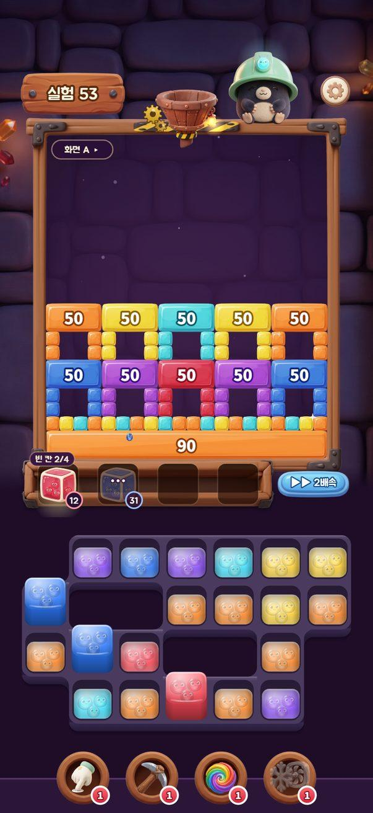
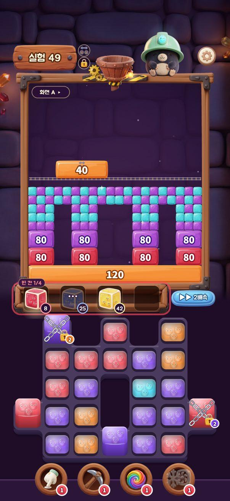
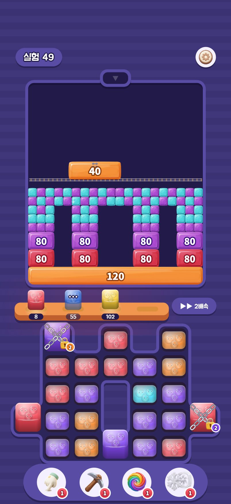
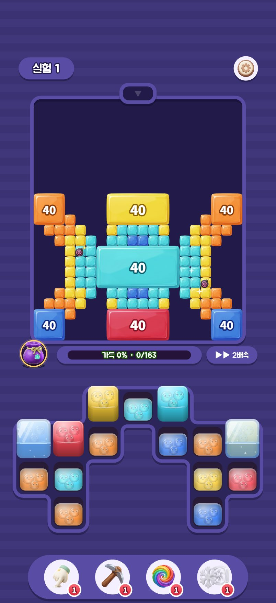
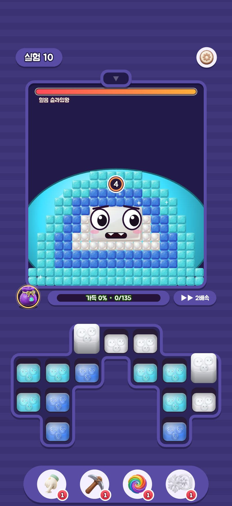
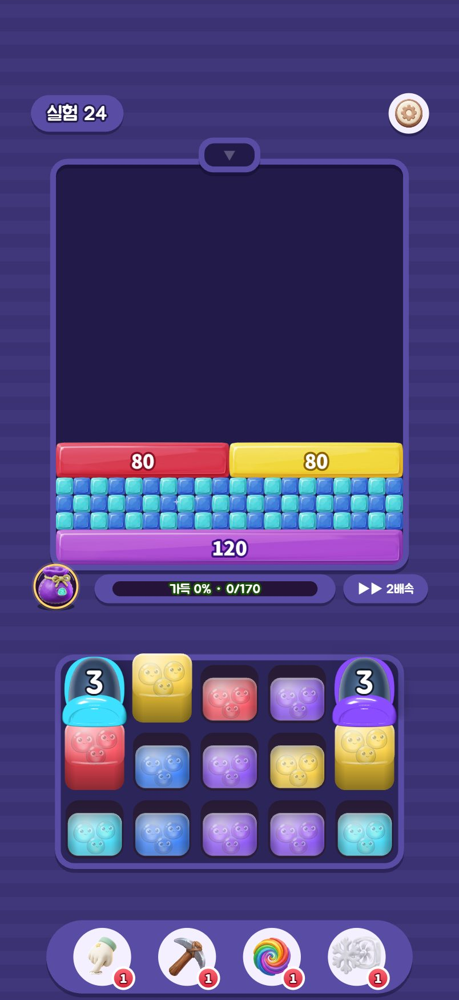

실험실 심플 화면
핍의 젤리 광산 실험실 판에만 적용한 단순한 화면이에요(본편 200판은 그대로). 판 구조(챔버 → 귀환 선반 → 상자판)만 남기고 장식을 걷어 냈어요.
전과 후 · 귀환 칸 판




무엇을 바꿨나
- 배경: 동굴 돌 그림 → 보라 한 색 + 옅은 가로줄(참고 영상처럼 바탕이 눈에 안 걸리게)
- 챔버: 나무 틀 · 쇠 모서리 · 떠다니는 먼지 → 테 하나짜리 둥근 판
- 핍 · 깔때기 · 톱니: 없앰. 챔버 위 가운데 발사구 하나 — 지금 쏘는 젤리 색과 남은 수가 보이고, 대기 상자는 양옆에 앉아요
- 귀환 칸: 시안 A 확정. 참고 영상의 주황 벤치처럼 상자가 벤치 위에 앉고 숫자는 벤치 앞면에(상자가 홈 밖으로 삐져나오던 문제 없앰). 이 화면에서 유일한 따뜻한 색이라 먼저 눈이 가요
- 상자판: 나무 받침 → 납작한 판 + 챔버와 같은 테. 쓴 자리 셔터 줄무늬도 없앰
- 아이템 · 레벨 · 설정 · 2배속: 나무 동그라미 → 한 줄 알약 바 + 흰 원, 납작한 알약 단추
- 위험(빈 칸 1개)은 테두리 선 대신 벤치가 붉게 숨쉬듯 빛나요
다른 실험실 판




폰 402px · 360px 폭을 크롬과 아이폰 엔진(WebKit)으로 찍어 겹침 · 오류가 없는 것을 확인했어요. 실제 아이폰에서는 아직 못 봤어요.